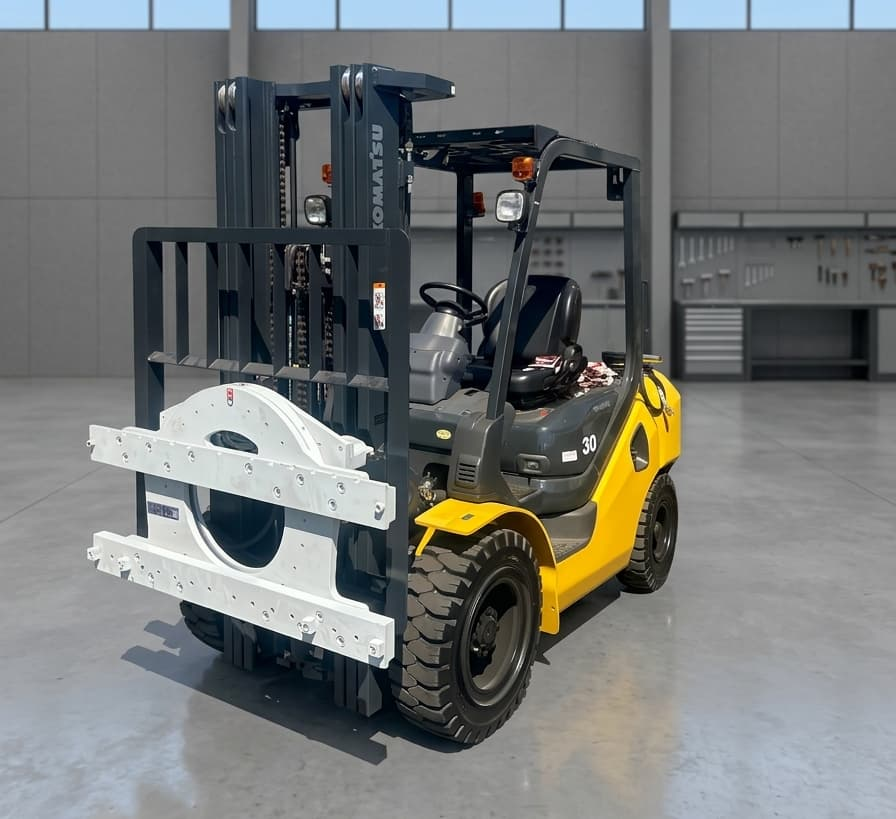
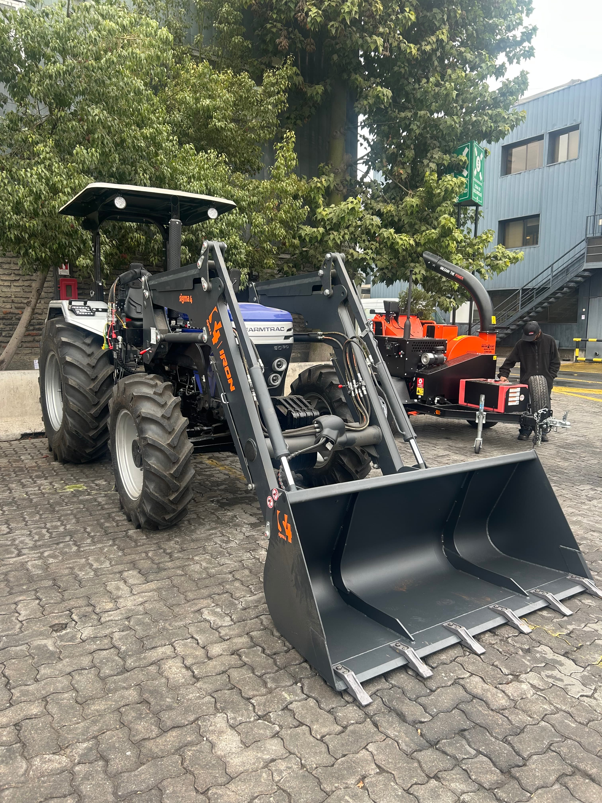
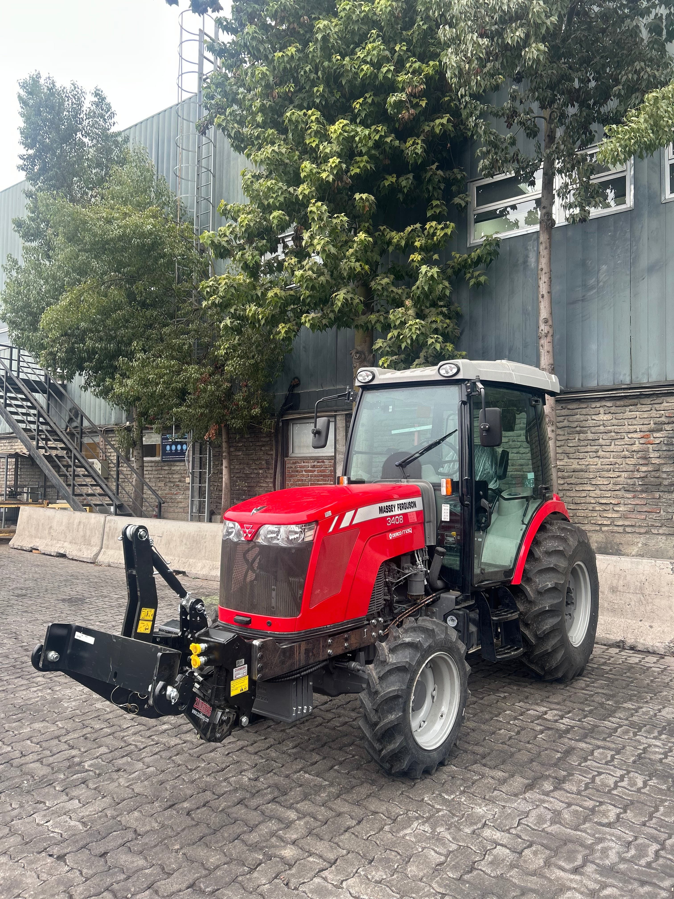
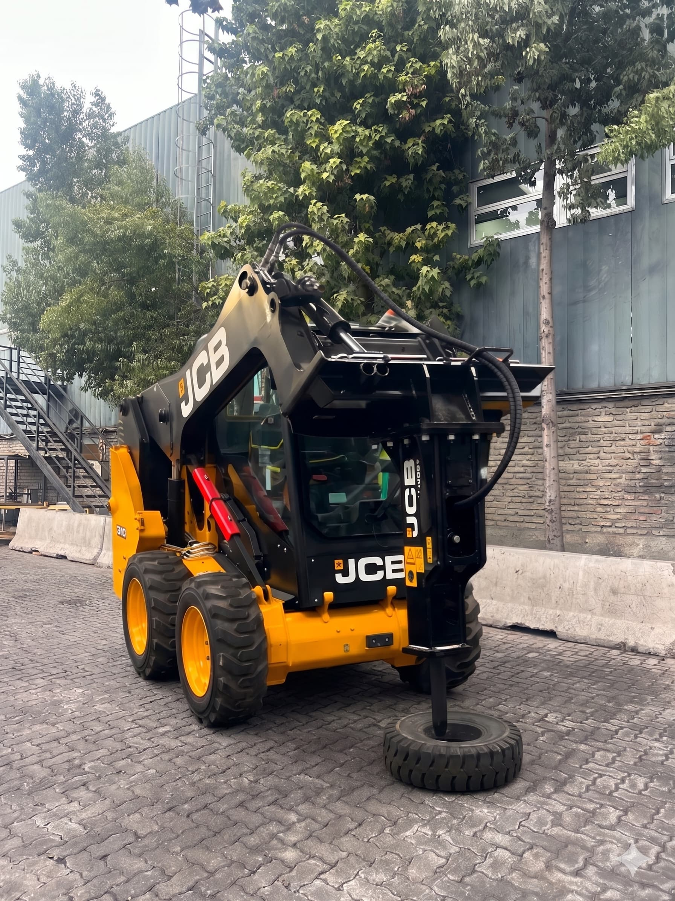
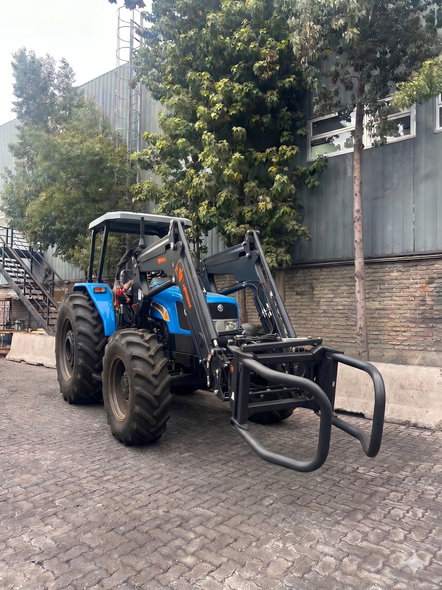
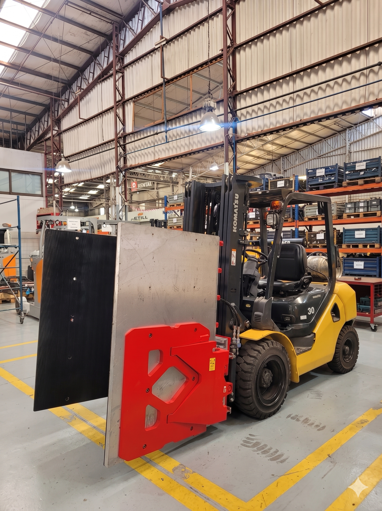

Galería de proyectos, instalaciones y adaptaciones hidráulicas desarrolladas en terreno.

Adición de palanca y línea para rotador hidráulico. Incluye soportaciones a medida para mangueras de 3/8" y montaje del implemento.

Habilitación en tractor Farmtrac. Modificación estructural de fijaciones al chasis, ajuste de escape, instalación de tensores y sistema hidráulico.

Instalación en tractor Massey Ferguson. Fabricación de estructuras laterales para fijación al chasis y confección de flexibles hidráulicos a medida.

Montaje en minicargador JCB. Fabricación de flexibles hidráulicos a medida con acoples rápidos para conexión a línea auxiliar.

Habilitación de implemento frontal en tractor. Modificación estructural de fijaciones al chasis y adaptación completa del sistema hidráulico.

Habilitación en grúa horquilla. Adición de palanca de control independiente y conexión de línea hidráulica para implemento de agarre lateral.